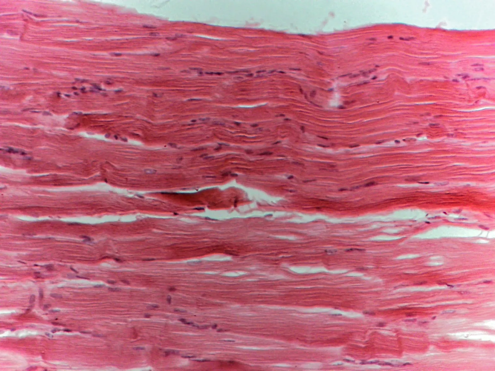
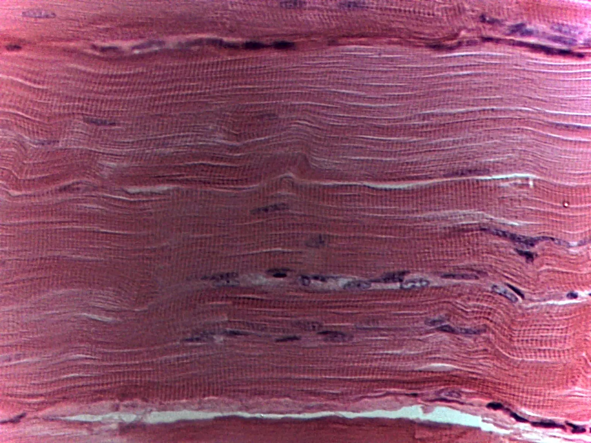
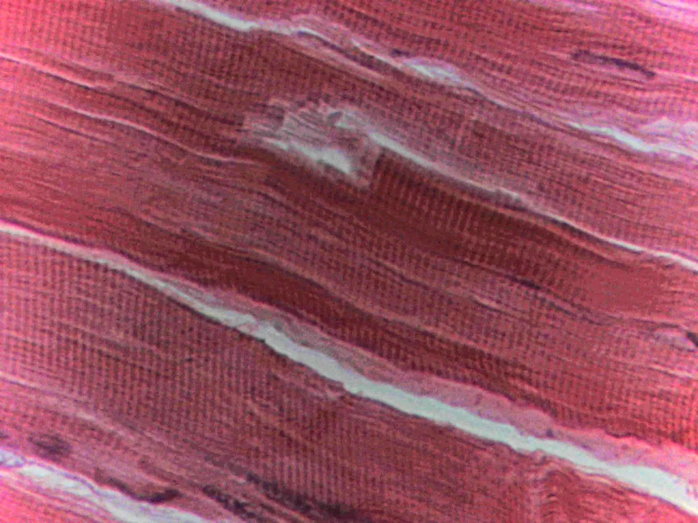
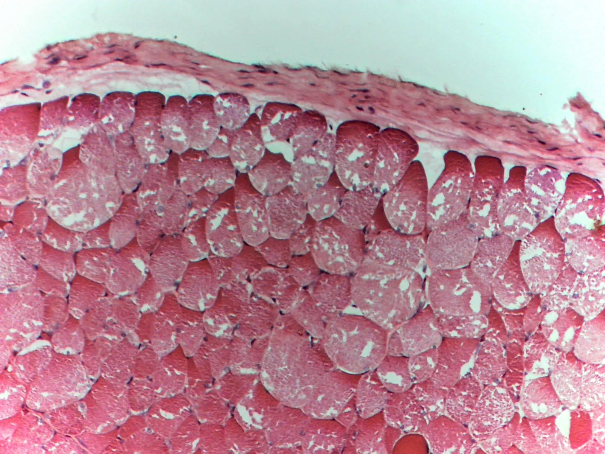

Lâmina 19 · Tecido muscular
Músculo estriado esquelético (cortes transversal e longitudinal)




Toque na imagem para ampliar. No computador, use as setas do teclado para trocar de imagem.
Lâmina 19 · Tecido muscular




Toque na imagem para ampliar. No computador, use as setas do teclado para trocar de imagem.